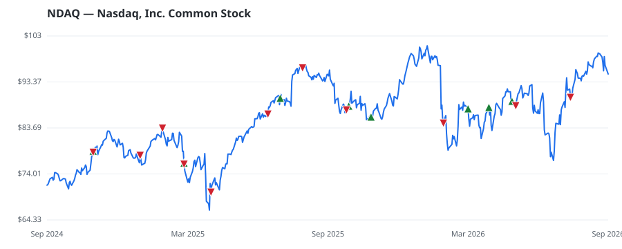

bullish · bearish · n/a — dots: price>SMA10 · SMA10>SMA50 · SMA50>SMA200 · up>down volume (20d)
Diversified Financials · large cap
Members who bought NDAQ earned a dollar-weighted +7.6% from their disclosure dates, versus +10.7% for the S&P 500 over the same holding windows (-3.1% alpha).

▲ green = a disclosed purchase · ▼ red = a disclosed sale (plotted on disclosure date)
Founded in 1971, Nasdaq is primarily known for its equity exchange, but in addition to its trading business (about 22.5% of sales), the company sells market and financial data to investors, offers Nasdaq-branded indexes, and lists companies through its capital access segment (42.5%). Nasdaq's newest segment, financial technology, was primarily constructed through the acquisitions of Verafin and Adenza and has expanded the company into capital management, financial crime, and regulatory compliance software (35%) as it seeks to become a diversified technology company. SECURITY & COMMODITY BROKERS, DEALERS, EXCHANGES & SERVICES · website
| Revenue | $8.3B | Net income | $1.8B |
|---|---|---|---|
| Operating income | $2.3B | Diluted EPS | $3.09 |
| Assets | $31.1B | Equity | $12.2B |
| Member | Chamber | Out-performer | Disclosed buys $ | Return on buys |
|---|---|---|---|---|
| April McClain Delaney | house | — | $137K | +8.7% |
| Rohit Khanna | house | — | $32K | +2.5% |
Disclosed $ figures are bracket midpoints — filings report ranges (e.g. $1,001–$15,000), not exact amounts.
| Fund | Fund alpha vs SPY | Position | % of book |
|---|---|---|---|
| BRAUN STACEY ASSOCIATES INC | +6% | $29M | 0.8% |
| DELTA CAPITAL MANAGEMENT LLC | +5% | $0M | 0.2% |
| CYPRESS ASSET MANAGEMENT INC/TX | +3% | $0M | 0.1% |
| BANTAMAC CAPITAL, LLC | +14% | $0M | 0.2% |
Hedge data: SEC EDGAR 13F · ranked funds beat SPY in >50% of their quarters · fund alpha = mirror-portfolio return minus SPY.